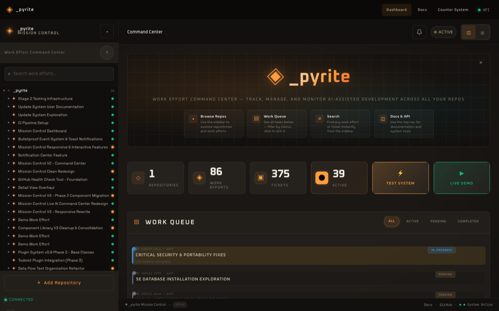
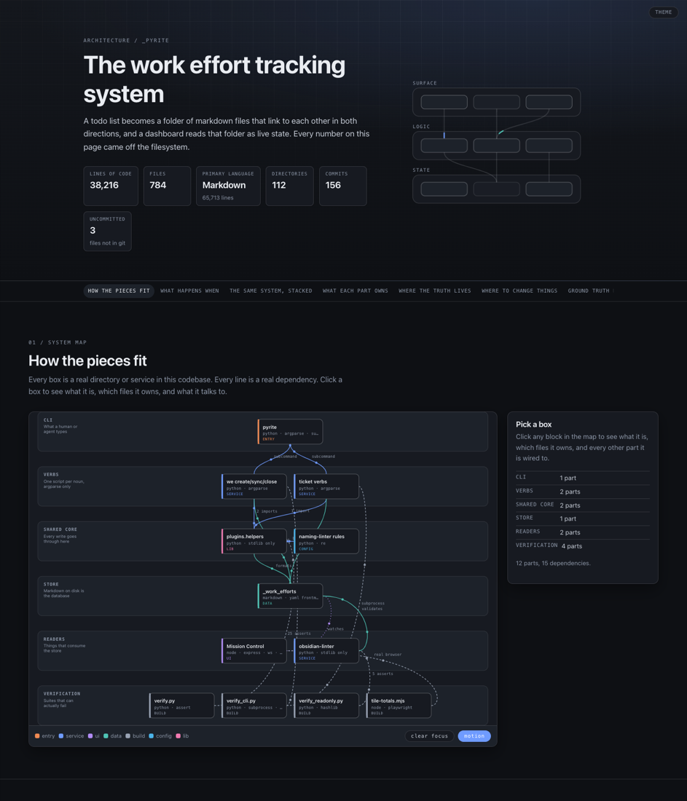
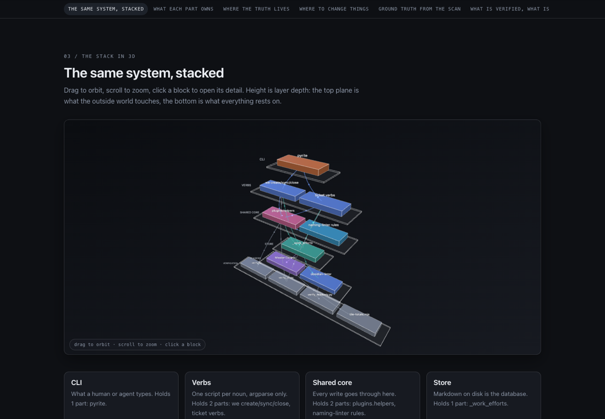

_pyrite / engineering
I built a small tool that turns a list of todos into a folder of markdown files which link to each other in both directions. Then I tested it properly and it turned out to have four bugs that would silently corrupt data. Here is how the whole thing works, one small step at a time, including the parts where I was wrong.
Work gets planned in conversation, and conversation evaporates.
You describe a plan. Something writes it down as a list. The list is perfect, detailed, correctly ordered, and completely gone the moment the window closes. Next session starts from a summary of a summary, and by the third retelling the ordering constraint that actually mattered has quietly disappeared.
The fix is not a better summary. It is putting the plan somewhere that outlives the conversation,
in a format that a human, an editor, and a program can all read. That place already existed in this
repo as a convention: _work_efforts/. What did not exist was any way to create one.
The repo had helper functions that could build a work effort folder, and a tool that could add a ticket to a work effort that already existed. There was no path from a list of todos to a work effort. The helpers had exactly one caller, a Todoist plugin, and nothing else had ever used them.
A folder. That is the whole data model.
No database, no schema migration, no server. One directory per unit of work, holding one index
file and a tickets/ subfolder:
The directory listing is the index. There is no second place to keep in sync.
The ID encodes its own history. WE-260730-tfxo is a work effort created on
2026-07-30 with the random suffix tfxo. Its tickets borrow that suffix:
TKT-tfxo-001. You can tell at a glance which work effort any ticket belongs to, from the
filename alone, without opening it.
Each file carries YAML frontmatter, which is what makes the folder machine-readable:
---
id: TKT-tfxo-001
title: "Wire page.coverage.startJSCoverage() into interpreter.mjs"
status: pending
created: 2026-07-30T12:19:27.329Z
parent: WE-260730-tfxo
labels: ['sightglass', 'testing']
---
# Wire page.coverage.startJSCoverage() into interpreter.mjs
Part of [[WE-260730-tfxo_index|WE-260730-tfxo]]
Note parent and the wiki-link on the last line. Both point back to the hub. That redundancy is deliberate, and step 3 explains why.
A hub that lists its spokes is a table of contents. A spoke that also names its hub is a graph.
The index carries a table linking out to every ticket. Every ticket carries a parent
field and a link back. Either direction alone would be half a system: with only downward links you
cannot open a ticket and know where you are; with only upward links you cannot see the shape of the
work without opening everything.
Solid lines are written by the index. Dashed lines are written into each ticket. Both are checked by the repo's linter.
I audited this across every work effort created that day: 252 assertions over 49 tickets,
covering hub-links-spoke, spoke-links-hub, the parent field, and the linter's rule that a
ticket's ID suffix must match its parent's. Then I corrupted one parent field on purpose
and confirmed the audit went red. An audit that cannot fail is decoration.
This is the step where an obvious simplification is wrong.
The natural way to link a ticket is by its ID:
[[TKT-tfxo-001]]That does not work, and the reason is worth understanding because it is not obvious. The repo's Obsidian linter resolves a wiki-link only against an exact filename stem. It also has a second rule: a bare ticket ID sitting in text, not wrapped in a link, gets flagged as an unlinked reference. Those two rules together leave exactly one legal form.
| What you write | What the linter says |
|---|---|
TKT-tfxo-001 | flagged: unlinked reference |
[[TKT-tfxo-001]] | flagged: broken wikilink, target not found |
[[TKT-tfxo-001_wire_page_coverage|TKT-tfxo-001]] | resolves |
So the link must contain the full filename stem, with an alias so a human still reads a short ID. And the stem is not something you can type from memory, because titles get sanitised and truncated at 50 characters.
One function, ticket_file_stem(), computes that name. The code that writes the
file and the code that links to it both call it. Not two implementations that agree today;
one implementation that cannot disagree. When I checked, all 8 links in a work effort matched their
filenames byte for byte, and the 50-character truncation would silently have broken every one of them
had the logic been duplicated.
Todos in, folder out.
The input is forgiving on purpose, because todo lists arrive in whatever shape someone pasted them. Markdown checklists, bullets, numbered lists and bare lines all reduce to titles; headings and blank lines are dropped. A checked box still becomes a ticket, because the point is to capture the whole list rather than only its unfinished part.
$ pyrite we create \
--title "Sightglass follow-through" \
--objective "Close the four gaps the README names" \
--todos-file todos.md
Created: _work_efforts/WE-260730-tfxo_sightglass_follow_through
ID: WE-260730-tfxo
Tickets: 8
TKT-tfxo-001 Wire page.coverage.startJSCoverage() into interpreter.mjs
TKT-tfxo-002 Diff each probe's covered ranges against the union of all others
TKT-tfxo-003 Confirm NO_NEW_GROUND actually fires once coverageAdded is non-zero
...
Two details in that path are less obvious than they look.
Every ticket ID is allocated before anything is written. The hub needs to link to
files that do not exist yet, and a --dry-run has to report the real IDs it would use
rather than placeholders. So the plan is computed first, then written.
The dry run genuinely writes nothing. That sounds too obvious to test. I tested it anyway, by asserting the target directory is still empty afterwards, because "it printed the word dry-run" and "it wrote no files" are different claims and only one of them matters.
Because the store is just files, anything can read it.
The repo already had a Mission Control dashboard that had never been run: its dependencies were not
installed and its lockfile was missing every declared dev dependency. It watches the work-efforts
directory with chokidar and pushes a WebSocket frame whenever a file changes.

_work_efforts/ live. Nothing here is a database query; it is a directory walk plus a file watcher.The important property is that the dashboard is a reader, not a source of truth. Delete its process and you lose nothing; restart it and it rebuilds from disk. The markdown is the system.
My first check connected a socket, received one frame, and printed "live updates proven". That
frame was the initial state dump that arrives on connect. It proves the socket opened and nothing
else. Rewritten to ignore the init frame and count only frames caused by a real file
change, the honest result was 3, 2 and 5 post-change frames across three runs, one
per edit.
Three verbs, and one deliberate piece of redundancy that has to be reconciled.
Ticket status lives in exactly one place: the ticket's own frontmatter. But the hub's table also
shows a status column, because a table of contents that cannot tell you what is done is not much of a
table of contents. That copy drifts the instant a ticket changes, so sync exists to
regenerate it.
The stale window between a status change and a sync is real. The tool prints the exact sync command every time, but nothing forces it.
sync replaces only the Tickets block. An objective, a description, and any
hand-written notes elsewhere in the index survive untouched. I tested that by writing the string
HAND WRITTEN into an index, syncing, and asserting it was still there.
A tool that always says yes is not enforcing anything.
close refuses while any ticket is open. That one is obvious. The second refusal is
more interesting:
$ pyrite we close --we WE-260730-rllq
Refusing to close WE-260730-rllq: 5 ticket(s) still open
TKT-rllq-001 pending
TKT-rllq-002 pending
...
$ pyrite we close --we WE-260730-empty
Refusing to close WE-260730-empty: it has no tickets, so there is
nothing to have completed
A work effort with zero tickets would otherwise close successfully, because "no ticket is incomplete" is trivially true when there are no tickets. That is the same defect shape as a test that asserts something about an empty list and passes because the list is empty. The guard exists so a work effort nobody touched cannot be marked done.
Later that session, close refused a work effort I believed was finished. It was
right: an earlier status change had silently failed because I had run the command from a
subdirectory, where the cwd-relative default for the work-efforts folder did not resolve. The
refusal surfaced a bug in my own tool that I would otherwise have shipped.
The core had 25 assertions. The CLI layer above it had none.
I had verified create, sync, close, list and
status exactly once each, by hand, on inputs that behaved. That is not testing, that is a
demo. So I wrote down what I thought was broken before looking, then wrote a suite that drives
the real scripts through subprocess and feeds them hostile input.
| Prediction | Verdict | What actually happened |
|---|---|---|
A | in a title breaks the table | confirmed | Silently added a column to the row |
A " in a title breaks YAML | worse | The dashboard's parser throws, taking the whole work effort offline |
sync fails if Tickets is last | confirmed | Errored with "no Tickets section" against a file that had one |
| WE-ID collision merges folders | refuted | Explicit IDs were already refused |
| Ticket IDs collide after a deletion | confirmed | Two files carrying TKT-893u-003 |
The quote bug is the one that mattered. gray-matter, which the dashboard uses, is a
real YAML parser, so it does not shrug at malformed input:
PARSED plain title="handle normal input"
THREW embedded " can not read a block mapping entry;
a multiline key may not be an implicit key
PARSED colon title="fix bug: the sequel"
PARSED backslash title="path C:\\temp"
All four bugs were fixed at the root, in the one module every writer goes through, so the Todoist plugin inherited the fixes without knowing they happened. Then the crucial part: each fix was mutation-tested. Revert it, and the suite must go red.
Control run with nothing mutated: 59 checks, 0 failed.
My first quote check asserted the title line contained an even number of double quotes. Four quotes satisfy that, so it happily passed the exact broken output it was written to catch.
My first pipe check asserted a table row had 4 pipes. A correct row has 5, four cell delimiters
plus one inside the wiki-link, and the fix emits \| which still contains the character.
Counting raw pipes could never have tested this. It now compares cell counts against a title with
no pipe in it.
A weak assertion is worse than no assertion, because it reads as coverage.
The most expensive mistake of the session was a measurement, not a defect.
I reported that the dashboard's four headline counters were racy and never showed the right total. I had six readings from an unchanging dataset, and no two agreed:
Every one of those readings came from chrome --headless --dump-dom
--virtual-time-budget. The tiles are painted by a function that tweens from the old number to
the new one across 20 requestAnimationFrame steps, assigning the exact target only on the
final step. --virtual-time-budget advances timers and network, but not the frame
clock. The tween stalls partway and the dumped DOM holds a frozen intermediate value.
I was reading frames of an animation and recording them as totals. Loading the same page in a real
browser and sampling at 0, 250, 500, 1000, 2000 and 4000ms of wall-clock time gives
3/191/838/87 at every single sample, including the first.
My own diagnosis contained the answer. The counters read the same in-memory store as the sidebar, and the sidebar was demonstrably correct. If two surfaces share a data source and one is right, either both are right or your measurement is wrong. I filed the bug anyway, committed it, and had to retract it an hour later.
The general form: before believing a defect you measured, ask whether the instrument can
observe the thing at all. A DOM dump cannot see an animation, the same way a
readPixels call on a composited WebGL canvas cannot see a scene that is rendering fine.
The work effort for that bug is closed with zero lines of dashboard code changed, which is the honest outcome. What survived is a real regression check that drives Chrome through Playwright, compares the tiles against the API, and fails if any load disagrees or if loads disagree with each other. It passes 5 for 5.
The honest list, not the flattering one.
| Issue | Risk | Why it has not bitten yet |
|---|---|---|
| Ticket IDs are unique by construction, not by lock | medium | Two concurrent creates in one work effort would still collide. Single-operator use makes it theoretical, until anything runs in parallel |
| Work effort IDs are 4 random characters | medium | About 1.7 million combinations, and an explicit collision is now refused. A randomly drawn one would still merge two work efforts into one folder |
| The hub table is a copy | low | Only sync reconciles it. Nothing forces you to run it, so a hand-edited ticket can leave the hub wrong indefinitely |
| Two linters disagreed about ticket ID format | medium | 167 files use the canonical form, 102 the legacy one. Reconciled, but nothing runs that linter automatically |
| Every read is a directory glob | low | Fine at 37 work efforts. Unknown at several thousand, and nothing is indexed |
The YAML bug is the one worth sitting with. It was real but latent: a scan of all 314 markdown files found zero that fail to parse, purely because no title had yet happened to contain a double quote. That is not a system that was working. That is a system that had not been asked the right question yet.

docs/architecture-work-efforts.html.
The tooling is unremarkable. Roughly 1,500 lines of argparse and string formatting over a folder of markdown. What made it trustworthy was not the design; it was writing down predictions before looking, feeding it input designed to break it, and then breaking each fix on purpose to confirm the test noticed.
Three of the six defects found this session share one shape: a measurement whose result was fixed before the thing being measured had any say. A counter that could only ever be zero. A test that returned a value instead of asserting. A socket frame that arrives on connect no matter what. The fourth inverted it into a false negative and cost a retracted bug report.
The habit that catches all of them is cheap: break it on purpose, and check that the check goes red.